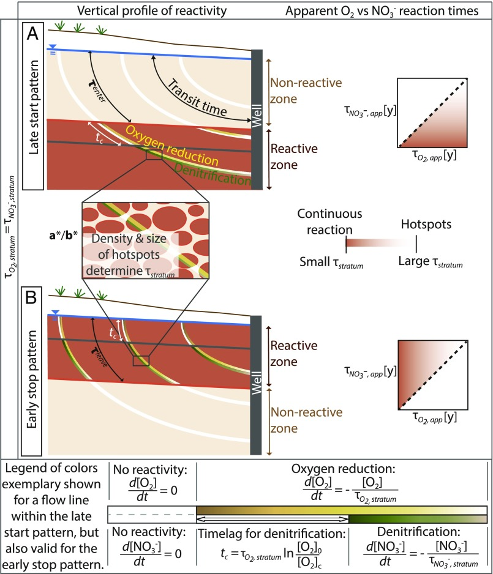

1. Mesurer les temps de transfert
CFC, silice dissoute et modèles permettent de contraindre les distributions de temps de résidence dans des aquifères peu profonds.
Le temps passé par l’eau dans le sous-sol est une variable essentielle, mais il ne suffit pas à prédire ce que devient un contaminant. Nos travaux ont progressivement montré qu’il faut aussi savoir où passent les écoulements et où sont situées les zones réactives.
Les traceurs environnementaux permettent de relier les eaux observées aujourd’hui à leur histoire de recharge et de circulation. Ils donnent accès non pas à un âge unique, mais à une distribution de temps de transit. Cette distribution constitue un intermédiaire entre la structure physique de l’aquifère et les processus de transport ou de transformation.
Les travaux menés avec Tamara Kolbe et les collaborateurs du projet ont montré que la capacité de dénitrification dépend de la position des zones réactives par rapport aux chemins d’écoulement. La base de la zone altérée ou certains niveaux riches en minéraux réduits peuvent concentrer l’essentiel de la réactivité.
Le résultat important est conceptuel : la « quantité de réactivité » disponible ne suffit pas. Sa localisation spatiale dans l’architecture hydrogéologique contrôle son efficacité à l’échelle du bassin.

CFC, silice dissoute et modèles permettent de contraindre les distributions de temps de résidence dans des aquifères peu profonds.
La réaction dépend du temps d’exposition mais aussi de la rencontre effective entre l’eau, les donneurs d’électrons et les interfaces réactives.
La question devient : peut-on utiliser géologie, géomorphologie, climat et usages pour prédire des fonctions intégrées de rétention ou de transformation à l’échelle des bassins de tête ?
À Ploemeur, une série de CFC couvrant 2004–2024 montre que les temps de transit répondent au changement de pompage de manière très contrastée selon la connexion hydraulique des points. Après la réduction du pompage, l’augmentation du temps de transit médian est d’environ +15 ans au puits de pompage, +10 ans à F11 et +5 ans à MF1, tandis que d’autres points évoluent peu.
Le temps de résidence devient ainsi non seulement un descripteur du système, mais aussi un observateur de sa réorganisation transitoire.
Le prolongement actuel est de faire des temps de résidence et des conditions redox des variables intermédiaires entre les caractéristiques du paysage et les fonctions biogéochimiques. L’ambition n’est plus seulement de dater l’eau, mais de comprendre dans quelle mesure un hydrosystème stocke, retarde, transforme ou transmet les pressions qui lui sont appliquées.
Cette approche combine relations causales fondées sur les processus et relations statistiques lorsque les déterminants sont trop nombreux ou moins directement observables.
Ma contribution a consisté à faire du temps de résidence un lien entre structure des circulations et fonctionnement biogéochimique, puis à déplacer progressivement la question de l’« âge de l’eau » vers la capacité fonctionnelle des hydrosystèmes. Cette trajectoire s’est construite avec notamment Tamara Kolbe, Camille Vautier, Jean Marçais, Sarah Leray, Luc Aquilina, Gilles Pinay, Flore Sergeant et de nombreux collaborateurs internationaux.
Kolbe et al. (2019), PNAS — stratification de la réactivité et élimination des nitrates.
Gauvain et al. (2021), Water Resources Research — contrôles géomorphologiques des temps de transit.
Vautier et al. (2021), Science of the Total Environment — trajectoires de récupération des nitrates.
PyAges — cadre reproductible pour comparer distributions d’âge et incertitudes à partir de plusieurs traceurs.